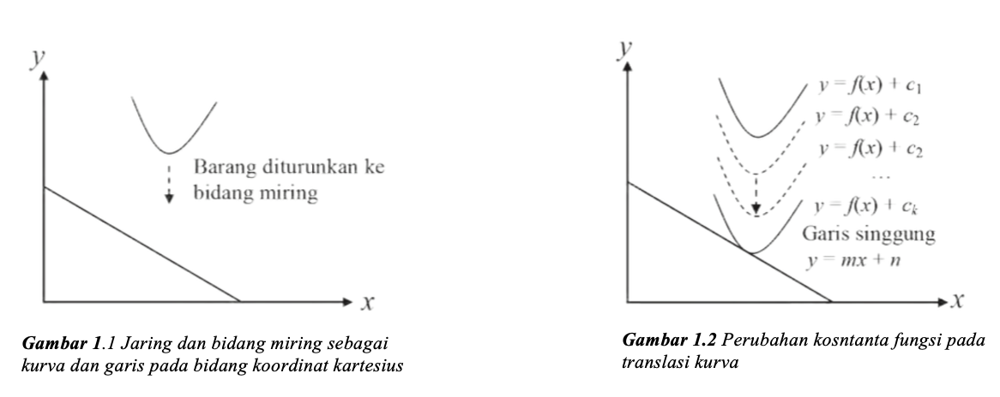
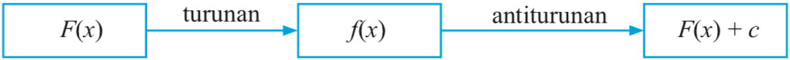
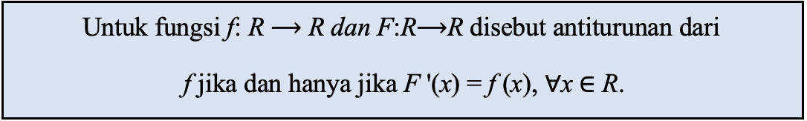

Integral merupakan salah satu bagian dari matematika yang sangat penting dalam
menyelesaikan masalah perhitungan, misalnya unutk menentukan luas sebuah daerah
tertutup
dan volume dari benda putar. Tahukah Anda bahwa lambing integral $\int_{}^{}$
pertama kali
diperkenalkan oleh seorang ilmuan dari Leipzig, Jerman Bernama Gottfried Wilhelm
Leibniz
(1646-1716).
Selain dalam bidang matematika, aplikasi integral banyak pula digunaka dalam bidang
lain, seperti fisika dan kedokteran. Dalam bidang fisika, integral dapat digunakan
unutk
menghitung usaha yang dilakukan suatu gaya pada sebuah benda. Sementara dalam bidang
kedokteran, integral dapat digunakan untuk menghitung luas permukaan tubuh yang akan
diberi radiasi atau mendekteksi volume sel tumor atau kanker dalam tubuh pasien.
Sebelumnya kita telah mempelajari konsep turunan, karena konsep turunan sangat
berhubungan dengan konsep integral yang akan kita pelajari pada bab ini.
Bagaimanakah
hubungan konsep turunan dan konsep integral?
Untuk memperoleh definisi integral dengan mengetahui kaitan antara integral dengan
turunan, kita dapat menggunakan gradien garis singgung suatu kurva. Gradien yang
kita
ketahui sebagai kemiringan merupakan turunan pertama dari persamaan garis. Dengan
kata
lain fungsi persamaan garis merupakan anti turunan dari gradien
(kemiringannya).

Jika jaring tersebut sebuah kurva dan diturunkan pada Gambar 1.1 maka berdasarkan
konsep
Transformasi (translasi), terjadi perubahan nilai konstanta pada fungsi tersebut
sampai
akhirnya kurva tersebut akan menyinggung bidang miring atau garis. Perhatikan gambar
1.2!
Berdasarkan gambar tersebut, kurva yang bergerak turun akan menyinggung garis
tersebut
dengan konstanta n. Dengan demikian, kita akan menggunakan konsep gradien suatu
garis
singgung untuk menemukan hubungan turunan dan integral. Ingat kembali konsep gradien
garis singgung yang kamu pelajari pada materi Turunan. Gradien garis singgung suatu
fungsi pada suatu titik adalah nilai turunan pertama fungsi yang disinggung garis
tersebut pada titik singgungnya. Berdasarkan konsep tersebut maka Gambar 1.2
memberikan
informasi bahwa m adalah turunan pertama fungsi $y = f(x)$.
Secara notasi matematika dituliskan = $f(x)$ sehingga $y =
f(x)$ disebut antiturunan dari $m$. Dengan demikian antiturunan dari m adalah $y =
f(x)+c$. Hal ini berarti nilai konstanta c dapat berubah-ubah.Secara notasi
matematika dituliskan
$m= \frac{dy}{dx}$ = f(x) sehingga $y = f(x)$ disebut antiturunan dari m. Dengan
demikian antiturunan dari $m$ adalah $y = f(x)+c $. Hal ini berarti nilai konstanta
c dapat
berubah-ubah.
Anti turunan suatu fungsi dapat digambarkan seperti diagram dibawah ini:

Berdasarkan pemaparan tersebut dapat disimpulkan pengertian Integral (antiturunan)
yaitu:

Jadi, integral adalah antiturunan dari sebuah fungsi.
Agar lebih memahami mari perhatikan contoh soal di bawah ini!
Contoh Soal
Tentukan turunan fungsi-fungsi berikut.
1). $F(x)=\frac{1}{4}x^4,$
Dapatkan kamu tentukan turunan fungsi-fungsi tersebut? Coba kamu turunkan fungsi-fungsi tersebut kemudian amatilah turunan nilai konstantanya! Hubungkan kembali fungsi awal dengan turunannya serta anti turunannya! (petunjuk: turunan fungsi $F(x)$adalah $F'(x) = f(x) = y'$)
Penyelesaian:
1) $F(x)=\frac{1}{4}x^4$ adalah
$F'(x)=f(x)=y'=\frac{d}{dx}[\frac{1}{4}x^4] = x^3$
1). $F(x)=\frac{1}{4}x^4,$
Dapatkan kamu tentukan turunan fungsi-fungsi tersebut? Coba kamu turunkan fungsi-fungsi tersebut kemudian amatilah turunan nilai konstantanya! Hubungkan kembali fungsi awal dengan turunannya serta anti turunannya! (petunjuk: turunan fungsi $F(x)$adalah $F'(x) = f(x) = y'$)
Penyelesaian:
1) $F(x)=\frac{1}{4}x^4$ adalah
$F'(x)=f(x)=y'=\frac{d}{dx}[\frac{1}{4}x^4] = x^3$
Tentukan turunan fungsi-fungsi berikut.
2). $F(x)=\frac{1}{4}x^4+4,$
Dapatkan kamu tentukan turunan fungsi-fungsi tersebut? Coba kamu turunkan fungsi-fungsi tersebut kemudian amatilah turunan nilai konstantanya! Hubungkan kembali fungsi awal dengan turunannya serta anti turunannya! (petunjuk: turunan fungsi $F(x)$adalah $F'(x) = f(x) = y'$)
Penyelesaian:
2) $F(x)=\frac{1}{4}x^4+4$ adalah
$F'(x)=f(x)=y'=\frac{d}{dx}[\frac{1}{4}x^4+4] = x^3$
2). $F(x)=\frac{1}{4}x^4+4,$
Dapatkan kamu tentukan turunan fungsi-fungsi tersebut? Coba kamu turunkan fungsi-fungsi tersebut kemudian amatilah turunan nilai konstantanya! Hubungkan kembali fungsi awal dengan turunannya serta anti turunannya! (petunjuk: turunan fungsi $F(x)$adalah $F'(x) = f(x) = y'$)
Penyelesaian:
2) $F(x)=\frac{1}{4}x^4+4$ adalah
$F'(x)=f(x)=y'=\frac{d}{dx}[\frac{1}{4}x^4+4] = x^3$
Tentukan turunan fungsi-fungsi berikut.
3). $F(x)=\frac{1}{4}x^4-\frac{1}{2},$
Dapatkan kamu tentukan turunan fungsi-fungsi tersebut? Coba kamu turunkan fungsi-fungsi tersebut kemudian amatilah turunan nilai konstantanya! Hubungkan kembali fungsi awal dengan turunannya serta anti turunannya! (petunjuk: turunan fungsi $F(x)$adalah $F'(x) = f(x) = y'$)
Penyelesaian:
3) $F(x)=\frac{1}{4}x^4-\frac{1}{2}$ adalah
$F'(x)=f(x)=y'=\frac{d}{dx}[\frac{1}{4}x^4-\frac{1}{2}] = x^3$
3). $F(x)=\frac{1}{4}x^4-\frac{1}{2},$
Dapatkan kamu tentukan turunan fungsi-fungsi tersebut? Coba kamu turunkan fungsi-fungsi tersebut kemudian amatilah turunan nilai konstantanya! Hubungkan kembali fungsi awal dengan turunannya serta anti turunannya! (petunjuk: turunan fungsi $F(x)$adalah $F'(x) = f(x) = y'$)
Penyelesaian:
3) $F(x)=\frac{1}{4}x^4-\frac{1}{2}$ adalah
$F'(x)=f(x)=y'=\frac{d}{dx}[\frac{1}{4}x^4-\frac{1}{2}] = x^3$
Agar lebih memahami lagi mari perhatikan contoh soal di bawah ini!
Contoh Soal
Carilah antiturunan dari
1). $y'=\frac{dy}{dx}=x^3$
Penyelesaian:
1) $y'=\frac{dy}{dx}=x^3$
1). $y'=\frac{dy}{dx}=x^3$
Penyelesaian:
1) $y'=\frac{dy}{dx}=x^3$
- Carilah suatu fungsi yang jika diturunkan memuat $x^3$
- Untuk mempermudah kalian, kalian bisa mengambil fungsi pangkatnya satu lebih besar daripada $x^3$ yaitu $x^4$
- Turunkan fungsi yang telah kalian pilih seperti ini
$\frac{d}{dx}(x^4)=4x^3$ - Supaya koefisiennya menjadi 1 maka kedua ruas dapat dibagi
dengan 4
menjadi:
$\frac{d}{dx}(\frac{1}{4}x^4)=\frac{1}{4}.4x^3$ → $\frac{d}{dx}(\frac{1}{4}x^4)=x^3$ - Jadi antiturunan $y'=\frac{dy}{dx}=x^3$ adalah $y=\frac{1}{4}x^4$
Carilah antiturunan dari
2). $y'=\frac{dy}{dx}=3x^5$
Penyelesaian:
2). $y'=\frac{dy}{dx}=3x^5$
2). $y'=\frac{dy}{dx}=3x^5$
Penyelesaian:
2). $y'=\frac{dy}{dx}=3x^5$
- Kira-kira apa yang membuat berbeda dari soal nomor 1?
- Yup betul sekali, yang membedakan dari soal nomor 1 adalah memiliki koefisien
- Langkahnya masih tetap sama dengan penyelesaian dengan soal nomor 1, cuma coba abaikan nilai koefisiennya terlebih dahulu
- Carilah suatu fungsi yang jika diturunkan memuat $x^5 $
- Untuk mempermudah kalian, kalian bisa mengambil fungsi yang pangkatnya satu tungka lebih besar daripada $x^5$ yaitu $x^6$
- Turunkan fungsi yang telah kalian pilih seperti ini
$\frac{d}{dx}(x^6)=6x^5$ - Supaya koefisiennya menjadi 1 maka kedua ruas dapat dibagi
dengan
$\frac{1}{6}$ menjadi:
$\frac{d}{dx}(\frac{1}{6}x^6)=\frac{1}{6}.6x^5$ → $\frac{d}{dx}(\frac{1}{6}x^6)=x^5$ - Jadi antiturunan $y'=\frac{dy}{dx}=3x^5$ adalah $y=\frac{1}{6}x^6$
- Nah sekarang bagaimana dengan antiturunan $3x^5$? Kalian bisa langsung mengalikan hasil antiturunan dari $x^5$ dengan 3 menjadi $3(\frac{1}{6}x^6) = (\frac{3}{6}x^6)=(\frac{1}{2}x^6)$
- Sehingga diperoleh antiturunan $3x^2=(\frac{1}{2}x^6)$
Carilah antiturunan dari
3). $y'=\frac{dy}{dx}= \frac{5}{\sqrt{x}}$
Penyelesaian:
3). $y'=\frac{dy}{dx}= \frac{5}{\sqrt{x}}$
3). $y'=\frac{dy}{dx}= \frac{5}{\sqrt{x}}$
Penyelesaian:
3). $y'=\frac{dy}{dx}= \frac{5}{\sqrt{x}}$
- Masih ingatkah kalian dengan materi akar pangkat? Soal nomor 3 ini melibatkan akar perpangkatan negative
- Mari ubah $\frac{dy}{dx} = \frac{5}{\sqrt{x}}$ menjadi bentuk perpangkatan biasa yaitu $\frac{dy}{dx} = 5x^{-\frac{1}{2}}$
- Abaikan terlebih dahulu nilai koefisien fungsi tersebut
- Carilah suatu fungsi yang jika diturunkan memuat $x^{-\frac{1}{2}}$
- Untuk mempermudah kalian, kalian bisa mengambil fungsi pangkatnya satu tingkat lebih besar daripada $x^{-\frac{1}{2}}$ yaitu $x^{\frac{1}{2}}$
- Turunkan fungsi yang telah kalian pilih seperti ini
$\frac{d}{dx}(x^{-\frac{1}{2}}) = \frac{1}{2}x^{-\frac{1}{2}}$ - Supaya koefisiennya menjadi 1 maka kedua ruas dapat dikali
dengan 2
menjadi:
$\frac{d}{dx}(2x^{\frac{1}{2}})$ = $2.\frac{1}{2}x^{-\frac{1}{2}}$ → $\frac{d}{dx}(2x^{\frac{1}{2}})$ = $x^{-\frac{1}{2}}$ - Jadi antiturunan dari $x^{-\frac{1}{2}} = 2x^{\frac{1}{2}}$ coba cek jawabannya dengan menurunkan $2x^{\frac{1}{2}}$
- Nah sekarang bagaimana dengan antiturunan $5x^{-\frac{1}{2}}$? kalian bisa langsung mengalikan hasil antiturunan dari $x^{-\frac{1}{2}}$ dengan 5 menjadi $5(2x^{\frac{1}{2}}) = (10x^{\frac{1}{2}})1$
- Kembalikan lagi hasil dari $(10x^{\frac{1}{2}})$ ke bentuk akar yang menjadi $10\sqrt{x}$
- Sehingga diperoleh antiturnan $y'=\frac{dy}{dx}=\frac{5}{\sqrt{x}}$ adalah $y=10\sqrt{x}$